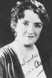

Country:United States, 91 minutes
Spoken languages:
Genres:Drama, Thriller
Director(s):Alfred Hitchcock
Writer(s):Alfred Hitchcock, Marie Belloc Lowndes, Eliot Stannard
Video Codec:Unknown
Number: 92


Certification:NR
Storyline:
London. A mysterious serial killer brutally murders young blond women by stalking them in the night fog. One foggy, sinister night, a young man who claims his name is Jonathan Drew arrives at the guest house run by the Bunting family and rents a room.
Cast: 


Medium: Original DVD,
Comments: Part of: 100 Greatest Horror Classics
Loaned: No
Aspect ratio: Unknown